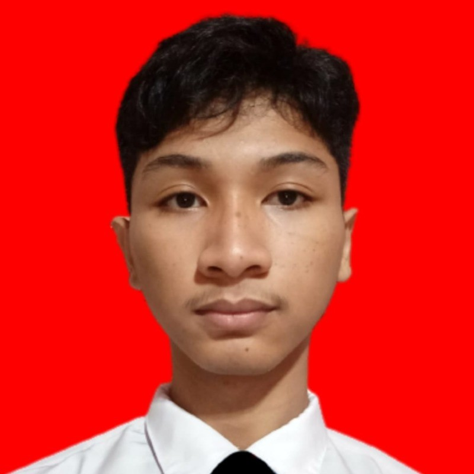

Saya adalah seorang Game Developer aktif di komunitas RAION, dengan semangat tinggi untuk mengembangkan game yang tidak hanya playable, tapi juga punya nilai artistik dan teknikal yang kuat. Masih berstatus sebagai mahasiswa di jurusan Sistem Informasi, saya terbiasa bekerja dengan tim multidisiplin dalam proyek berbasis Unity, dan pipeline Blender untuk asset 3D. Saya terbuka terhadap teknologi baru dan terbiasa belajar mandiri untuk mengembangkan skill secara berkelanjutan. Target saya adalah berkarier sebagai game engineer atau technical artist di industri game profesional, baik di dalam maupun luar negeri.
Unity Game Dev
Game Design
3D Modeling (Blender)
Asset Integration
UI/UX Game
Version Control (Git)
Agile Workflow
Game Jam Experience
Shader Graph
Level Design
C# Scripting